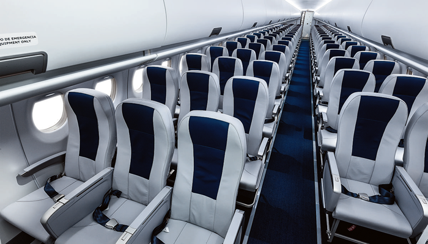

Um avião ou aeroplano é qualquer aeronave que necessita de asas fixas e motores para se sustentar no ar.[1][2] Pode possuir um ou mais planos de asa, sendo estas fixas em relação ao corpo da aeronave, ou seja, que dependem do movimento do veículo como um todo para gerar sustentação aérea. Essa definição de asa fixa também se aplica aos que possuem asas dobráveis pois estas também só geram sustentação ao se deslocar todo o veículo. Duas características comuns a todos os aviões são a necessidade de um fluxo constante de ar pelas asas para a sustentação da aeronave e a necessidade de uma área plana e livre de obstáculos onde eles possam alcançar a velocidade necessária para decolar e alçar voo, ou diminuí-la, no caso de uma operação de pouso. A maioria dos aviões, portanto, necessita de um aeroporto, dispondo de uma boa infraestrutura para receber adequada manutenção e reabastecimento, e para o deslocamento de tripulantes, carga e passageiros. Enquanto a grande maioria dos aviões pousa e decola em terra, alguns são capazes de fazer o mesmo em corpos d'água (hidroaviões), outros são capazes de decolar e pousar tanto na água quanto em terra (aviões anfíbios) e alguns até mesmo sobre superfícies congeladas. O avião é considerado o segundo meio de transporte mais seguro que existe, perdendo apenas para o elevador. [3] É atualmente, também, o meio de transporte civil e militar mais rápido do planeta (sem levarmos em conta os foguetes e os ônibus espaciais). Aviões a jato comerciais podem alcançar cerca de 900 km/h, e percorrer um quarto da esfera terrestre em questão de horas, e mesmo pequenos aviões monomotores são capazes de alcançar facilmente velocidades que giram em torno de 175 km/h ou mais em voo de cruzeiro. Já aviões supersônicos, que operam atualmente apenas para fins militares, podem alcançar velocidades que superam em várias vezes a velocidade do som (340 m/s = 1 224 km/h).uso.
O peso está relacionado com a força da gravidade, a qual atrai todos os corpos que estão no campo gravitacional terrestre. Não existe nenhuma forma de alterar esta força, então é preciso cada vez mais aperfeiçoar as aeronaves, para sempre respeitar as leis da natureza. O peso é um fator muito importante nas operações de pouso e decolagem, pois um avião muito pesado irá precisar de maior comprimento de pista para decolar, para conseguir velocidade suficiente visando a sustentação para anular o peso, sendo assim, aviões maiores são impedidos de operar em certos aeroportos. O mesmo acontece na aterrisagem, pois deve-se respeitar a lei da inércia.
